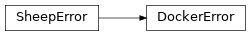

shepherd.errors.docker¶
Classes¶
DockerError: Error in execution of a docker command.
-
class
shepherd.errors.docker.DockerError(msg, rc=None, output=None)[source]¶ Bases:
shepherd.errors.sheep.SheepErrorError in execution of a docker command.
